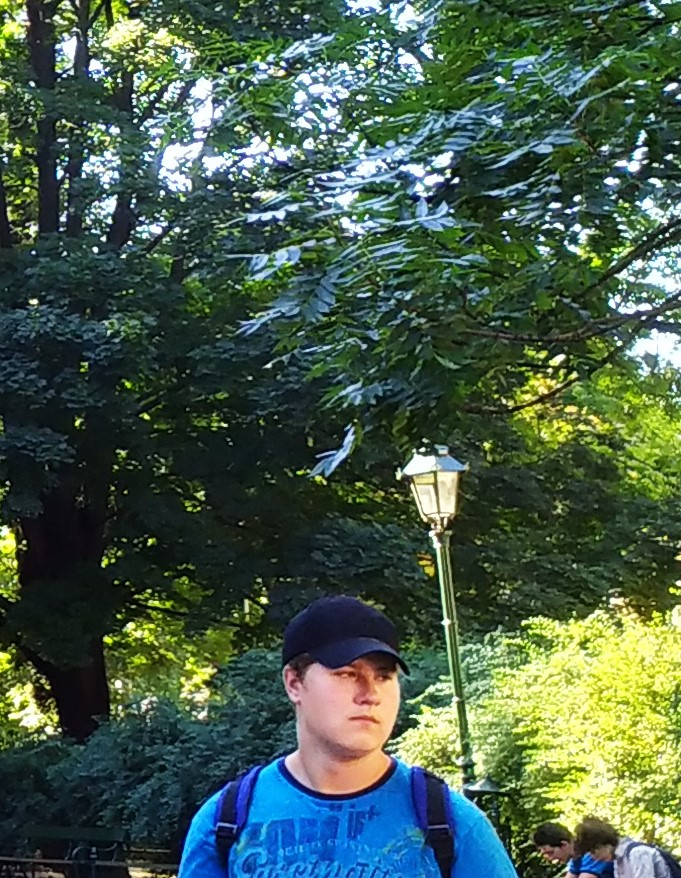
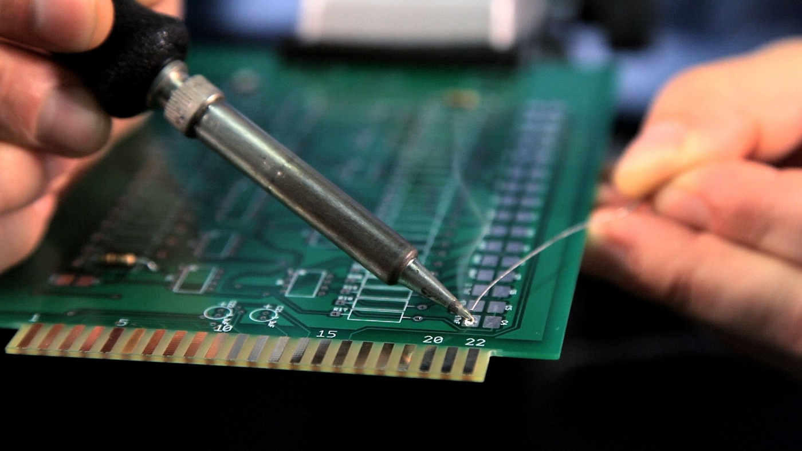

O mně
Jmenuji se Martin a je mi 17 let. Chodím na VOŠ a SPŠE v Olomouci, obor Elektrotechnika.
Ve volném čase chodím ven s kamarády. Jízda na kole je jedna z mých nejoblíbenějších sportovních aktivit, proto na něm, zvlášť v létě a na jaře, trávím dost času. Doma se buď věnuji elektrotechnice, nebo si zahraju nějaké videohry na počítači. Nejraději mám nějaké příběhové hry pro jednoho hráče, ale někdy si zahraji i něco pro více hráčů. Většinou s bratrem či bratranci.
Jsem také velkým fanouškem filmů a seriálů. Většina z mých nejoblíbenějších filmů pochází ze zahraničí, ale nepohrdnu ani českou klasikou.
Od začátku 2. ročníku mě poměrně chytlo programování. Výuka HTML mě dost bavila a teď odhaluji taje MicroPythonu.
Právě MicroPython a s ním spjatý micro:bit jsem používal při této práci. Práce s MicroPythonem mě stále baví, ale už se těším, až se seznámím s jinými programovacími jazyky ve vyšších ročnících.
Ve škole mě v současné době asi nejvíce baví Číslicová technika, Výpočetní technika, Praxe a Matematika.
Mým hlavním koníčkem je Elektrotechnika.

